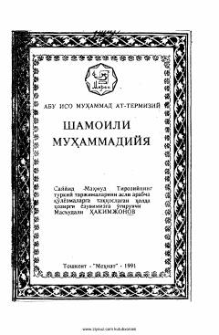

SMMuhammad alayhissalomning xulq-odoblari va hayot tarziga oid hadislar to'plami.
Ushbu asar Imom at-Termiziy tomonidan yozilgan bo'lib, unda Muhammad alayhissalomning xulq-odoblari, tashqi ko'rinishlari va hayot tarziga oid hadislar jamlangan. Kitob payg'ambarning shaxsiyatini va insoniy fazilatlarini o'rganishda muhim manba hisoblanadi.